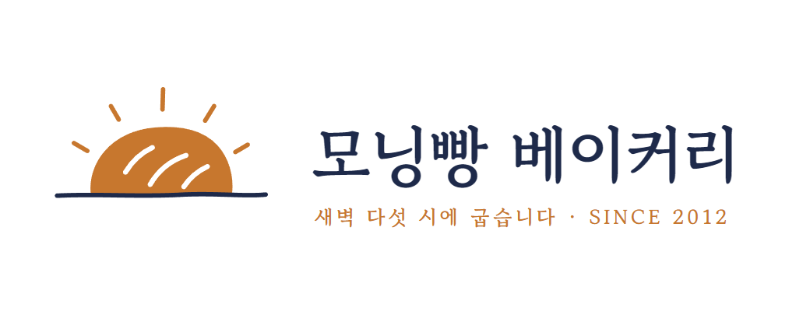

처음
로고_최종_진짜최종_v17.psd
사흘
지금까지 만든 실제 Claude 결과물
0개
로고
브로셔
홈페이지



EP4 · 로고6, 11, 12번 버려. 카페 로고랑 구분이 안 돼.
EP4 · 로고색은 두 개만.
EP6 · 회의실 규칙자료에 없는 건 지어내지 말고 '확인 필요'라고 표시해.
EP11 · 홈페이지메뉴와 가격은 사장님이 직접 고칠 수 있게.
EP12 · 첫 화면5번 버려. 시계는 편의점 같아.
EP15 · 로고빵 색은 그거 하나만.
많이 만든다
+
고르고
책임진다
책임진다
결정
디자이너 편 끝
AI 신입 길들이기
이제 당신이 CDO입니다